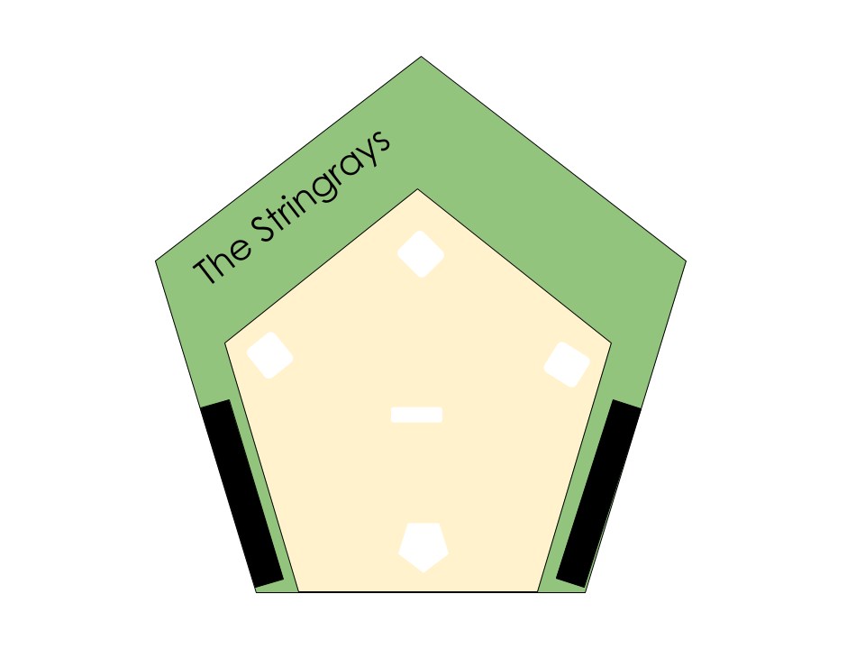

The Stingrays Win!
The Stingrays beat the Broncos last Sunday 42-35 in high scoring affair! Patrick Hill throws for 4 TD passes for a season high! The Stringrays play the Bears next Sunday.
Baseball
If you love baseball than our team is the team to cheer for! The Stingrays, our Major League Baseball team, is known for their number of World Series Titles. The Stingrays have won Titles and broken records for the past decade, definently showing off the talent that resides in Capital City! Inside a beautiful statium, watching the Stingrays hit dinggers and making great plays is always a fanastic experience. The head coach, Robret Thomas, says it's always enjoying to see fans in the stands!
Football
The Stingrays, an NFL football team, just made an apprance in Super Bowl LIV, defending there name in a 31-20 win! Along with a Super Bowl win, several players on the Stingrays hold many records that are yet to be beat. Capital Statium is a great place to catch a game. With an addicting atmosphere at the game, you will definitely be wanting to see another game!